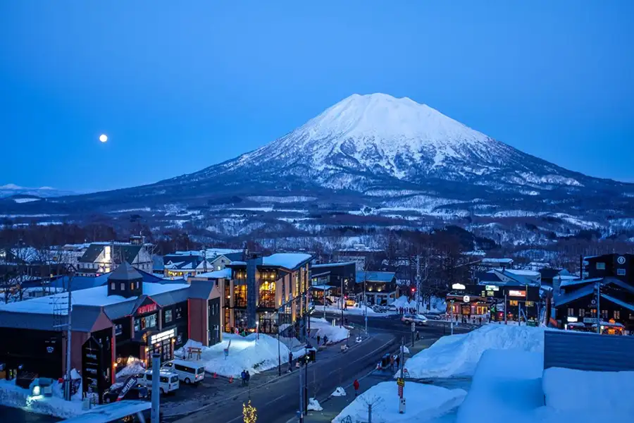
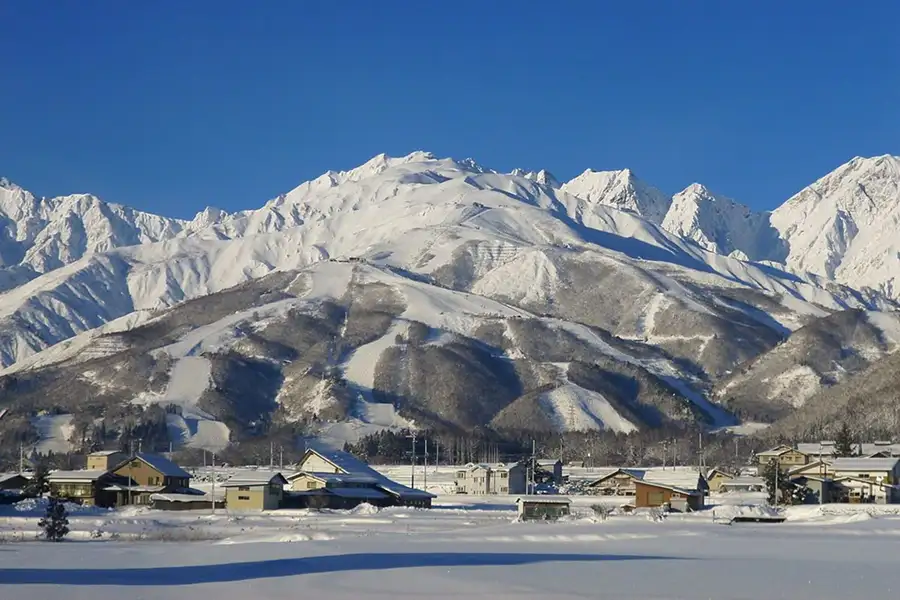
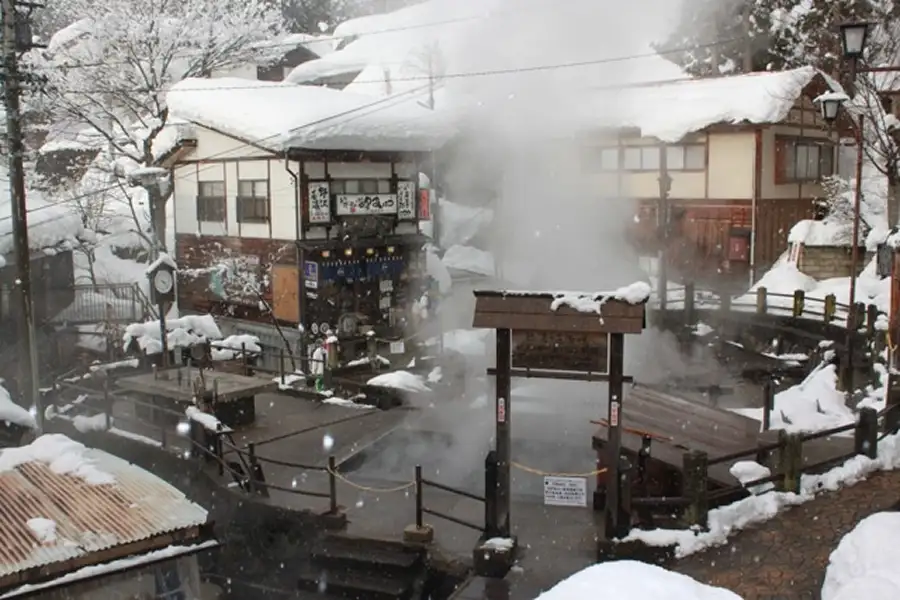
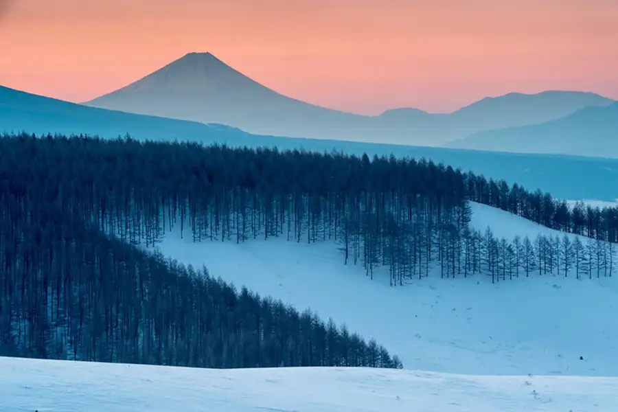
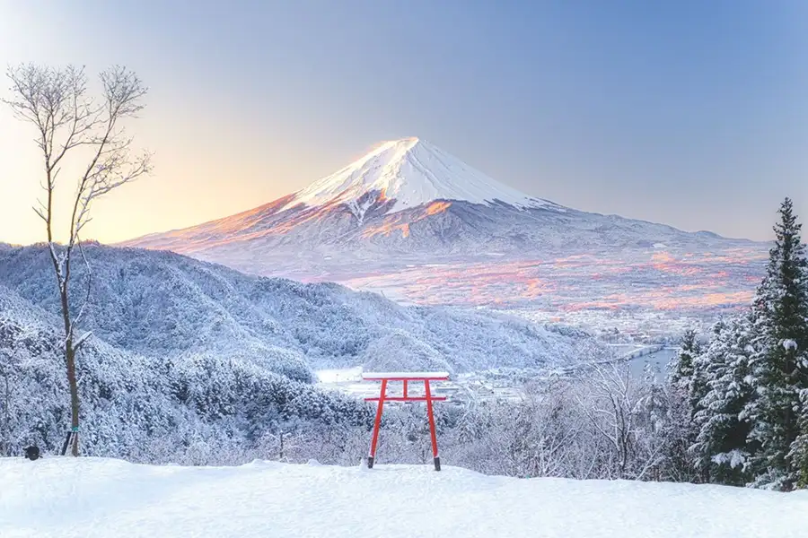
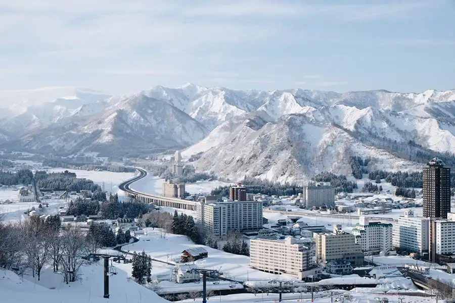

Japan Ski Destinations
Japan offers ski destinations ranging from world renowned resorts to traditional hot-spring villages. Explore six of our favorite locations and find the setting that best matches your skiing ability, travel budget, and vacation style.

Niseko is Japan's most internationally recognized ski destination. Its four connected resort areas offer deep powder snow, varied terrain, night skiing, restaurants, and accommodations ranging from simple lodges to luxury hotels.

Hakuba Valley includes ten ski resorts surrounded by the Japanese Alps. The area offers beginner terrain, steep mountain runs, village dining, and convenient access from Tokyo by train or bus.

Nozawa Onsen combines a large ski mountain with a traditional Japanese village feel. After skiing, visitors can explore narrow streets, local restaurants, and public hot-spring onsens.

Furano is known for dry Hokkaido snow, groomed runs, and a quieter feel than some larger resorts. The nearby town provides restaurants, shops, and additional lodging choices.

Myoko Kogen is a mountain region with several ski areas located around Mount Myoko. Travelers visit for its heavy snowfall, powder terrain, traditional accommodations, hot spring onsens, and relaxed atmosphere.

Shiga Kogen is one of Japan's largest connected ski regions. A shared lift-ticket system provides access to many mountains and trails, making it a strong choice for travelers who want to explore a large amount of terrain.